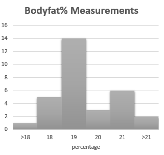
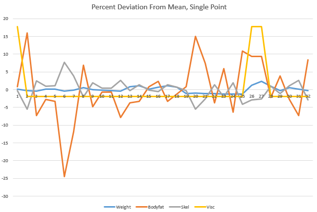
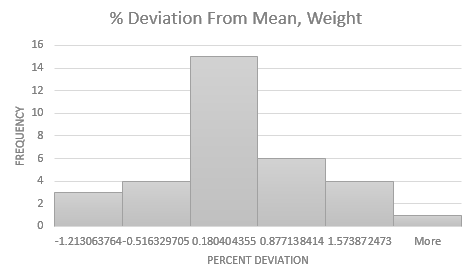
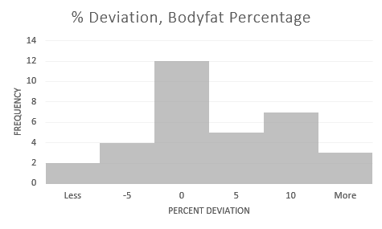
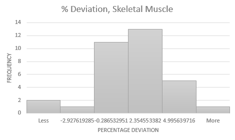

Cognitive Science Student, CS Enthusiast, Melee Player, Button Presser
Draft: v0.33.0 | Posted: 7/8/2017 | Updated: N/A | confidence of success: 65% | estimated time to completion: December 2017 | importance: Low
I measure myself with an Omron body composition scale roughly every 30-60 minutes or so across two days, seeing how my weight fluctuates throughout the day, after meals and exercise, etc. I cross-referenced this with the other variables this scale tracks (body-fat percentage, Visceral Fat, and Skeltal Muscle) to see if these variables were valuable or meaningful, or if paying attention to them would be misleading. I found that a commonly-held criticism of the scale - that water weight caused large fluctuations in bodyfat measurement - was difficult to reproduce, and that the scale seemed to be relatively consistent despite fluctuations of roughly 2% in either direction. Remaining to be done is repeated trials at substantially different body compositions.
I'm working on a data-driven approach to my own personal health, and something I thought could potentially be valuable was a simple body-composition scale. I figured it would be somewhat more information than fat calipers, as well as being more consistent and easy to use. I was worried about the apparent fluctuation that some of the more negative reviews complained about, with the claim being that increased water intake drastically affects the bodyfat percentage measurement. After considering that I track my food and water intake very closely, I figured I might be able to remedy this with some spreadsheet magic and a lot of free time.
The goal here was to determine how variable the body composition measurements were, how they change with water intake over time, and how seriously (if at all) I should consider those data points. I did this by measuring myself roughly every thirty minutes to an hour, and recording what/when I ate/drank as well as what I was doing. I did this for two days to collect data points, then threw all the data in excel to visualize it. I was hoping for a function that I could input the times I drank water, along with how much, in order to adjust what measurement I was given. I also harbored suspicion that such a correlation might not exist at all (i.e. a possible mass case of "the scale is definitely lying to me"), so this was also partially meant to test this claim.
After taking 18 measurements on the first day, I found almost no correlations between any of the data points - Weight and Bodyfat Percentage seemed completely uncorrelated (p=0.35), although skeletal muscle and bodyfat percentage were extremely correlated (p=6.75e-14) which suggests to me that the scale performs some kind of calculation on the same measurement to return both values. To test this, I took a few measurements while wearing a backpack with some weight in it (~10lbs and ~20lbs), which averaged around 23% and 27% bodyfat, respectively. (sidenote: putting those backpacks on and seeing numbers that I actually weighed only a few months ago was extremely disorienting!). Given the numbers from my normal day (means of .19 and 160 = 30.4lbs fat) and these new numbers (.23*170=39.1; .27*180=48.6) it was basically suggesting that all this added weight was fat. This gave me some confidence that the scale was indeed measuring something, and was probably calculating bodyfat percentage by process of elimination (i.e. everything not X is fat, therefore you are Y% bodyfat).
Curiously, throughout the day I was unable to demonstrate a correlation between my normal water intake and bodyfat percentage. I tried using "amount of water consumed since last measurement", "difference in water since last measurement", and "total water change since beginning of day" (for which I even used a sweating calculator to account for water lost during a run). The lowest p-value I got was 0.24, which is certainly not very significant. I did, however, note an outlier immediately after running (19% -> 15%) which shot back up after taking a shower (10 minutes later, 15% -> 17%). I tried getting my hands wet and using it to see if it would mess with the measurement (it didn't), and I took 6 measurements directly in a row to see if it would fluctuate that low, which it didn't (min: 18.4, max: 20.1; notably this range only excludes 5 data points from measuring 18 times throughout the entire day - the scale might just have an accuracy of +/- 2%).
So, I thought of a few scenarios in which running might have caused an outlier like this:
So, the next day I deliberately didn't eat any food or drink any water for most of the day, then ate a great deal and drank a lot of water in a really short window. The hope with this was to get somewhat dehydrated, then very hydrated to see if the change in weight would affect anything. I ended up eating 467g of food (my entire food intake for a day) and drinking 48 fl oz of water (which weighs 1422g) for a total change of about 4 lbs (it was very uncomfortable, especially given how small my meals had been for the months before this). My scale weight changed exactly 4 lbs before and after (158.8 -> 162.8), and my bodyfat percentage didn't really change (and actually went down compared to immediately before eating, although both were well within the normal fluctuation for the day at 21.9 -> 21.6). Notably, the visceral fat measurement was bumped up to 6 despite being 5 the previous 25 measurements. My weight fluctuated pretty wildly after eating (-> 164.4 -> 162.2) but my body fat percentage remained between the same range the entire time.
The mean values for each day's body fat measurement were 19.2 and 20.4, respectively. Below is a histogram of results aggregated from both days, which is close enough to normal given the relatively small sample size.

And below are the percent deviations of each point from the overall mean, and histograms of each measure's percent deviations (omitted is visceral fat, which was overwhelmingly consistent to the point of not needing a histogram). From this you can gather that the measurements are mostly consistent, and usually fall upon a relatively normal distribution. If you assume that the mean value is somewhat accurate, you can assume that this scale will return an accurate value most of the time, and if you take enough points of data (i.e. measuring each day for a long period of time) then the noise generated from outliers will likely be filtered out.
   
Overall, the bodyfat composition measurement and my water intake/expenditure seem to have very little, if any, correlation between them. The bodyfat percentage measurement as well as the other measurements on this scale seem to be relatively consistent, albeit fluctuating across a 3-4%ish range.
So far, This scale seems to provide a tentatively accurate measure of a number of different variables, and I'm excited to track how they change as the composition of my body adjusts. I think the variation in the measurements is negligible enough to be useful enough for looking at trends. So far, I've only measured "local" weight changes, so I'm only assigning a ~65% confidence that these data points are valuable at different body compositions.
Interesting to note, on a separate tangent, that my weight fluctuated a range of 2.6 lbs during a single day (not including my 4lb binge), which will be a useful figure for analyzing trends in my weight over longer time periods.
I won't have a very high degree of confidence until I perform these more rigorous all-day tests at least two more times at very different body compositions, and see how they compare to these results. Current plans are:
I'm guessing I'll be able to test at 150 pounds around mid-august (75% confidence), so I'll update this document when I get there.
posted on 7/8/2017